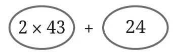
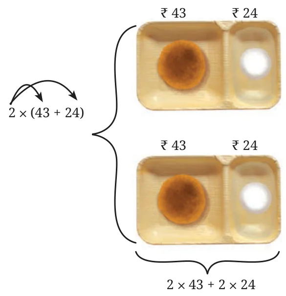
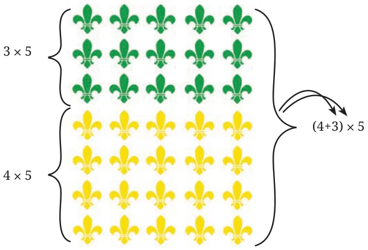
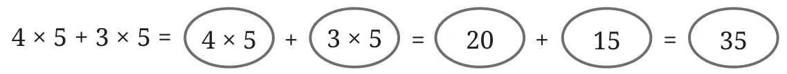
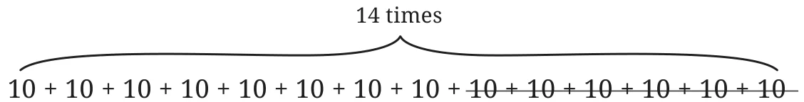

Example 15: Lhamo and Norbu went to a hotel. Each of them ordered a vegetable cutlet and a rasgulla. A vegetable cutlet costs ₹43 and a rasgulla costs ₹24. Write an expression for the amount they will have to pay.
As each of them had one vegetable cutlet and one rasagulla, each of their shares can be represented by \(43 + 24\).
What about the total amount they have to pay? Can it be described by the expression: \(2 \times 43 + 24\)?
Writing it as sum of terms gives:

This expression means 24 more than \(2 \times 43\). But, we want an expression which means twice or double of \(43 + 24\). We can make use of brackets to write such an expression:
\(2 \times (43 + 24)\).
So, we can say that together they have to pay \(2 \times (43 + 24)\). This is also the same as paying for two vegetable cutlets and two rasgullas:
\(2 \times 43 + 2 \times 24\).
Therefore,
\(2 \times (43 + 24) = 2 \times 43 + 2 \times 24\).

If another friend, Sangmu, joins them and orders the same items, what will be the expression for the total amount to be paid?
Example 16: In the Republic Day parade, there are boy scouts and girl guides marching together. The scouts march in 4 rows with 5 scouts in each row. The guides march in 3 rows with 5 guides in each row (see the figure below). How many scouts and guides are marching in this parade?
The number of boy scouts marching is \(4 \times 5\). The number of girl guides marching is \(3 \times 5\). The total number of scouts and guides will be

\(4 \times 5 + 3 \times 5\).
This can also be found by first finding the total number of rows, i.e., \(4 + 3\), and then multiplying their sum by the number of children in each row. Thus, the number of boys and girls can be found by
\((4 + 3) \times 5\).
Therefore, \(4 \times 5 + 3 \times 5 = (4 + 3) \times 5\).
Computing these expressions, we get

\((4 + 3) \times 5 = 7 \times 5 = 35\)
\(5 \times 4 + 3 \ne 5 \times (4 + 3)\). Can you explain why?
Is \(5 \times (4 + 3) = 5 \times (3 + 4) = (3 + 4) \times 5\)?
The observations that we have made in the previous two examples can be seen in a general way as follows.
Consider \(10 \times 98 + 3 \times 98\). This means taking the sum of 10 times 98 and 3 times 98.
\(\underbrace{98 + 98 + 98 + 98 + 98 + 98 + 98 + 98 + 98 + 98}_{\text{10 times}} + \underbrace{98 + 98 + 98}_{\text{3 times}}\)
Clearly, this is the same as \(10 + 3 = 13\) times 98. Thus,
\(10 \times 98 + 3 \times 98 = (10 + 3) \times 98\).
Writing this equality the other way, we get
\((10 + 3)\ 98 = 10 \times 98 + 3 \times 98\).
Swapping the numbers in the products above, this property can be seen in the following form:
\(98 \times 10 + 9 \times 83 = 98\ (10 + 3)\), and
\(98\ (10 + 3) = 98 \times 10 + 98 \times 3\).
Similarly, let us consider the expression \(14 \times 10 - 6 \times 10\). This means subtracting 6 times 10 from 14 times 10.

Clearly, this is \(14 - 6 = 8\) times 10. Thus,
\(14 \times 10 - 6 \times 10 = (14 - 6) \times 10\),
or
\((14 - 6) \times 10 = 14 \times 10 - 6 \times 10\)
This property can be nicely summed up as follows:
The multiple of a sum (difference) is the same as the sum (difference) of the multiples.